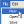

After you create a BlueZone script, you can return to the script and edit it in the BlueZone Script Editor application. In the Script Editor, you can add, delete, move, and edit items, and resolve syntax errors.
In the main window, select the point in the script that you want to add an item. The item is added below the selected item. For example, to add a Script Event, highlight a Script Event in the Script Events pane, and double-click. The Script Event is added into the script below the cursor. Or, highlight the desired Script Event in the Script Events pane and click the Insert Script Event icon located on the toolbar. The Script Event is added into the script below the cursor. Refer to Script events for more detailed information.
Follow the same procedure to insert LU Functions using the LU Function icon on the toolbar. Refer to LU functions for more detailed information.
Follow the same procedure to insert Menu Commands using the Menu Command icon

on the toolbar. Refer to Menu commands for more detailed information.